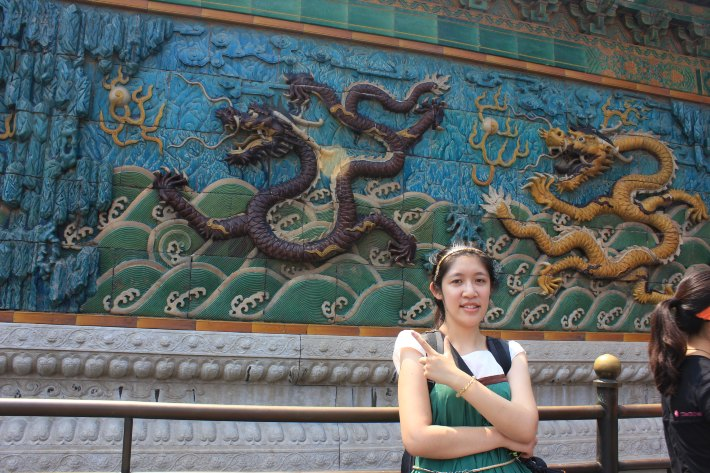
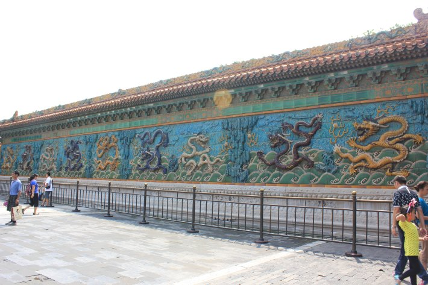
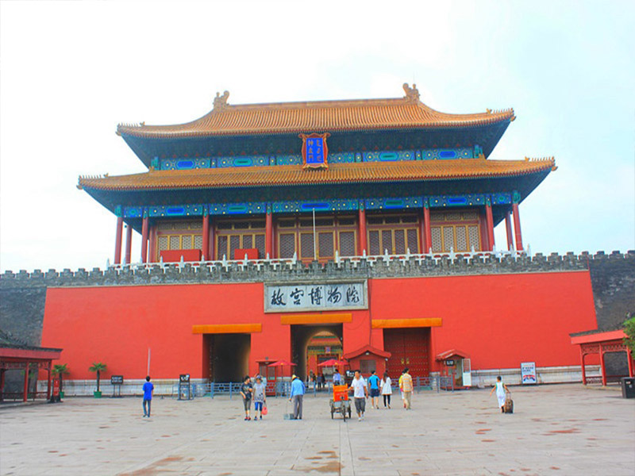
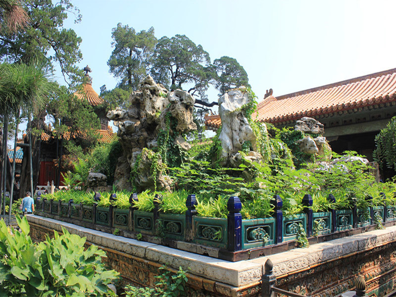

-

100%正品保证
-

10天退换货
-

10天调价补差额
-

7X24小时在线客服
小时候翻看相册，爸爸妈妈一起在这里拍了一张照片，很美当时还是胶卷照相机。二十年后，我也来到了这里，只不过多了一圈栅栏，需要保护文物。
走进这里，好不容易找到一个人帮我拍张，结果人太多，一个人变成两个了。不过有遗憾也是一种好事情吧。
我在九龙壁前面凹造型。
九龙壁
阳光下、八月的天。一切都是这么闷热和潮湿，连太阳都走进我的相机里面了。
熙熙攘攘的人走过这里，或快步或小走。
九龙壁
故宫博物院
紫禁城，北京宫廷建筑的代表，北京必览，一睹皇家昔日的威严宏伟。漫步其中，就感觉自己真的是穿越到了清代，请用心去感受。
开启穿越的钥匙，为什么会先写这里，因为做攻略的时候，说公交车是到这里就下，结果被门卫告知这里是后门也。
值得在坐一站回到前面的天安门去了，这样看来攻略是不能全信的哦。
故宫博物院
御花园
乾隆爷，最会享受。还记得很多戏里面都是在御花园偶遇，然后就开始了一段唯美的爱情故事。什么四爷遇到了若曦之类等等的。
假山做的漂亮，感觉这里有我们家客厅这么大，不还要打，周围都保存的完好无缺。
这里的人流少些，我也加快步伐的走走看看，虽说是走马观花，但也乐得清闲。
御花园
这里的树木都很奇特，一定是沾了皇室的霸气，连这绿树都是苍天仰望才能见也。
声明：本文内容中的所有文字、图片和音视频资料，版权均属乐途旅游网和作者本人所有，任何媒体、网站或个人未经本网站协议授权不得转载、链接、转贴或以其他方式复制发布/发表。已和本网站协议授权的媒体、网站或个人，在下载使用时必须注明"稿件来源：乐途旅游网"，违者本网站将依法追究责任。
龙族娇儿 2015-4-1 08:20:00
此文甚好，甚好！
龙族娇儿 2015-4-1 08:20:00
此文甚好，甚好！